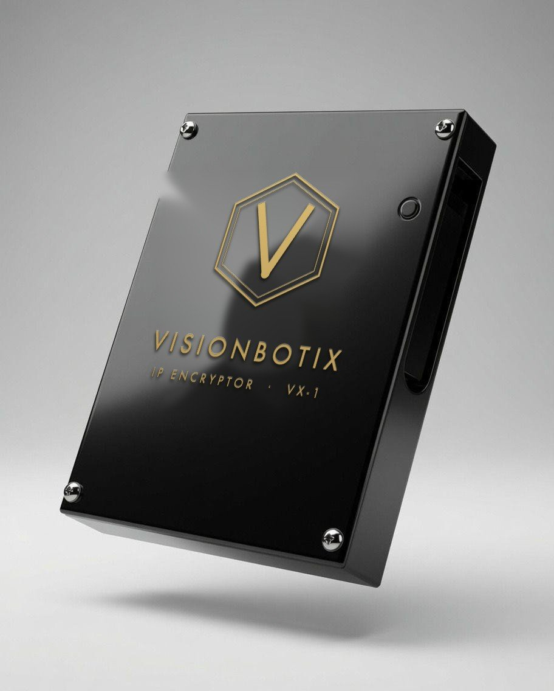
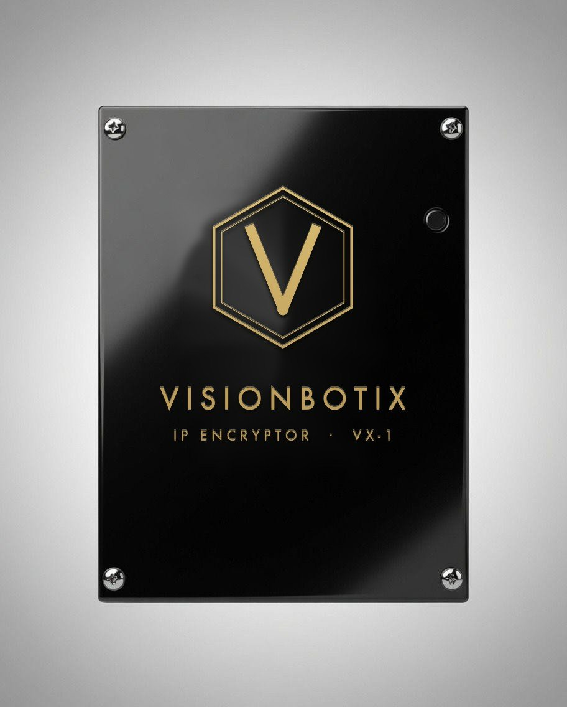
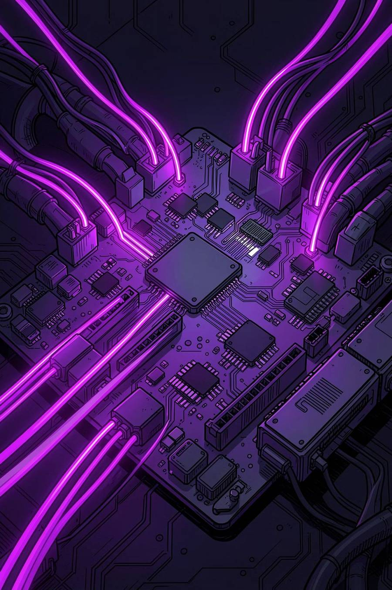

Hardware-level encryption for sensitive IP communications. The VX-1 encrypts everything crossing your WAN with AES-256 at line rate — running entirely on dedicated FPGA silicon for a minimal attack surface and dependable, always-on protection.

The VX-1 operates transparently at the IP layer. Place one unit at each end of the link, connect, and power on — all user data crossing the WAN is encrypted with AES-256 in Counter Mode. No reconfiguration of your routers, switches or endpoints.

Software encryptors inherit every weakness of the operating system beneath them. The VX-1 doesn't have one.
Dedicated FPGA hardware eliminates OS layers, background services and software dependencies — drastically reducing vulnerability exposure and malware risk.
No traditional public-key exchange to break. The VX-1's symmetric architecture provides inherent resistance to future quantum attacks and long-term confidentiality.
Hardware-speed encryption delivers ultra-high throughput with near line-rate performance, low latency and real-time packet processing.
Built-in protections against side-channel attacks and hardware exploitation, with enhanced tamper resistance for mission-critical environments.
Operates at the IP layer with zero complex setup — rapid rollout, seamless network integration and simplified lifetime maintenance.
AES-256 implementation verified byte-for-byte against NIST FIPS 197 reference vectors; production units follow FIPS 140-2/140-3 key management.
| Traditional Encryptors | VX-1 FPGA Encryptor | |
|---|---|---|
| Attack surface | Large — full OS, services, software stack | Hardware-hardened, minimal |
| Deployment | Complex procedures and reconfiguration | Zero-configuration plug-and-play |
| Quantum exposure | Public-key exchange at risk | Quantum-resistant symmetric architecture |
| Performance | Software bottlenecks under load | Ultra-high throughput, low latency |
| Maintenance | Patching, updates, config drift | Streamlined operational simplicity |

The VX-1 has been validated in staged, increasingly realistic environments using professional test equipment and multi-vendor infrastructure.
Secure communications for defense operations over any transport.
Protected data transmission between agencies and field offices.
Encrypted transactions and inter-branch data flows.
Industrial control systems, utilities and SCADA links.
Secure backbone communications at carrier scale.
Enterprise-grade secure interconnects between sites.
The VX-1 is a hardware network encryptor built by Visionbotix on dedicated FPGA silicon. It encrypts all IP traffic crossing a WAN with AES-256 in Counter Mode at near line-rate speed, deploys plug-and-play with zero configuration, and has no operating system — giving it a minimal attack surface.
Yes. The VX-1 avoids traditional public-key cryptography entirely, so there is no key exchange for quantum computers to break. Its symmetric AES-256 architecture provides inherent resistance to future quantum-based attacks and long-term confidentiality.
The VX-1 operates transparently on Layer 2 and Layer 3 networks, including ISP links, private WANs and satellite connections such as Starlink. It has been validated with multi-vendor equipment from Cisco, Huawei, TP-Link and Netgear, and benchmarked with Spirent TestCenter (RFC 2544, ITU-T Y.1564).
Request a technical briefing or evaluation deployment of the VX-1 IP Encryptor for your organization.
Get in Touch